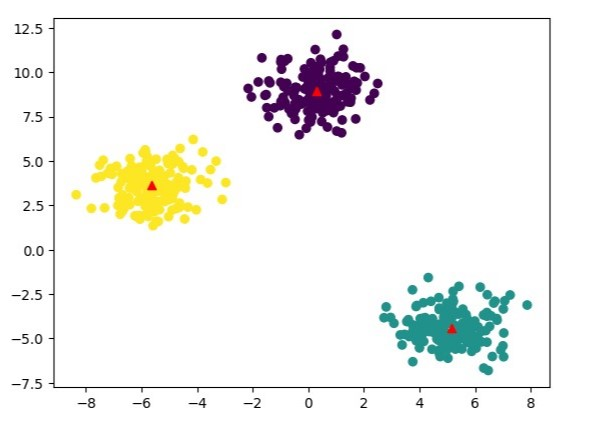

Portfolio
PowerBI Report
An interactive report for a mock Global Superstore. The report focuses on data for 3 European markets, Ireland, France, and Germany. The report offers insights into sales performance, the profitabilty of each product type, and customer profiles.

K-Means Clustering
This project applies the k-means clustering algorithm to segment customers based on their behaviors. The goal is to provide insights for targeted marketing strategies. This project is a group project, we used the k-means clustering algorithm in Python. The process involves data cleaning, feature engineering, and applying the clustering algorithm.
Using Python to Determine Emotion
This is a showcase of the use of python libraries and packages to determine the emotion of a person. I use the software on myself with my webcam. The utilization of Python to read the emotions of a face could be combined with the analysis of body language, tone of voice, speaking pace etc to detect discrepanices and changes as a person speaks. This could in turn be used to deduce if they are telling the truth. The ability of Python to detect the truth from a video has many use cases.

Airline Overbooking Profitability Prediction Model
This project takes fictional airline data and applies a predictive model to it. The data consists of a unique identifier as a flight number, the demand for the flight, and the number of no-shows for the flight.

DAX
This project uses Data Analysis Expression code to create new measures and calculated columns within Power BI. This enabled more dynamic and context-aware visualizations that adapted to our interactions and filtering. This approach enriched the analytical capabilities of our dashboard but also ensured that insights were derived from accurately computed data.